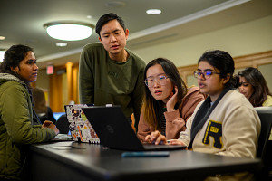
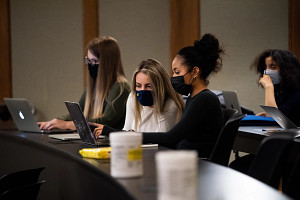

Getting help with academics is easy at UMSI. UMSI Peer Tutoring program is dedicated to provide support inside and outside the classroom for students. You can engage with peer tutors, receive assistance and also meet new classmates here. We provide tutoring on two subjects: programming and math.
Besides peer tutoring, office hours are also a great way to receive academic support.
For more information regarding student support and tutoring, please email umsi.academicsuccess@umich.edu.